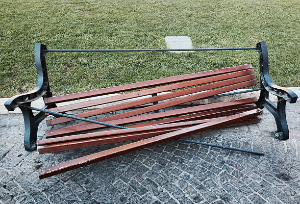

Damaged Park Equipment
Location: Riverside Park, North Playground
Reported by: Rowina Stanford

Yo, somebody definitely needs to check out this park bench. It's looking rough, and a lot of people stop here to chill. Would be awesome to get it fixed up so everybody can enjoy the park again.
Looks like that park bench has seen better days. It's a shame because folks come out here to relax and enjoy the park. Hopefully it gets repaired or replaced before somebody ends up without a good place to sit
That bench by the walking path has been broken long enough. People use it every day, and leaving it like this only makes the park look neglected. It should be repaired without further delay.